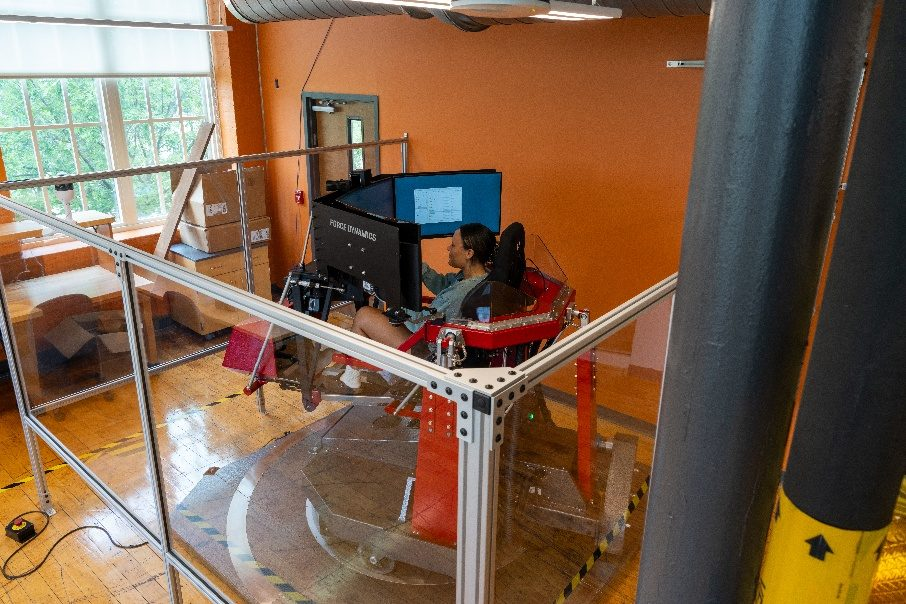
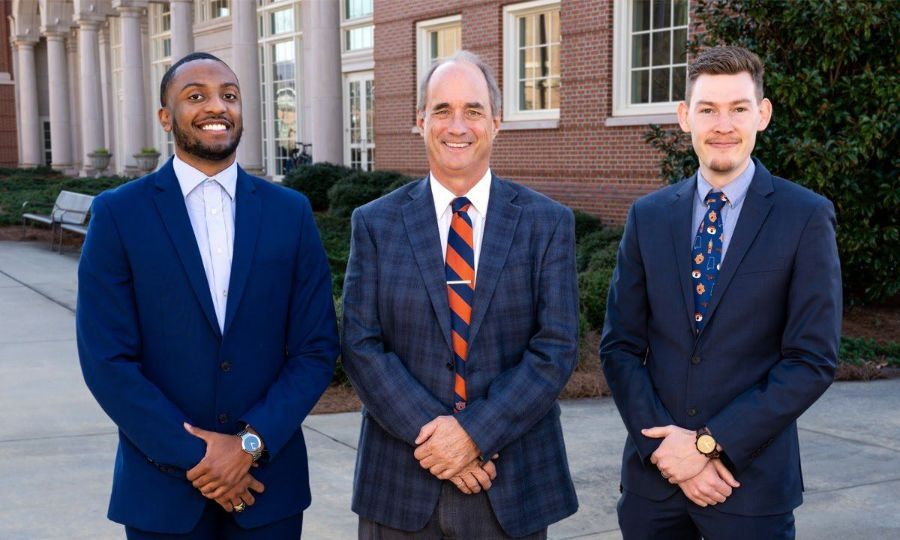
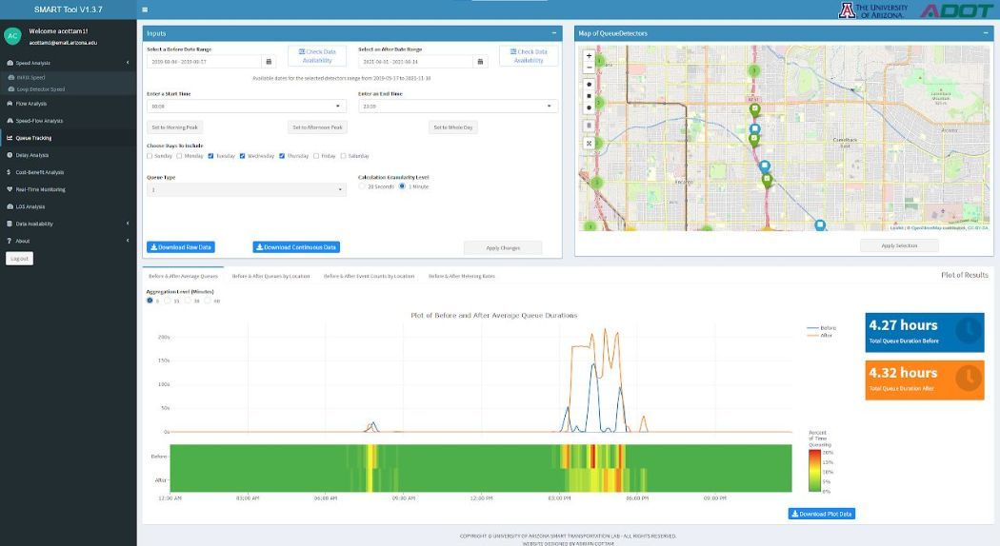
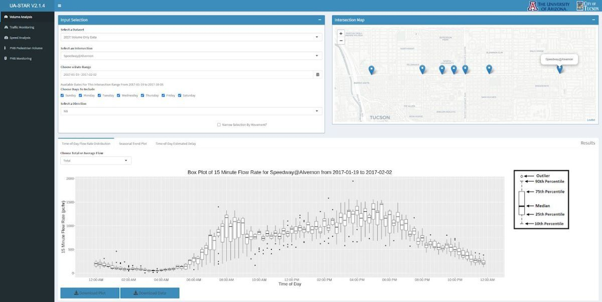

My research develops digital twins, large-scale models, and AI tools for transportation systems, with safety as the thread that runs through all of it.
Research areas
1. Transportation digital twins and simulation-based safety evaluation
I build digital twins of transportation facilities from field data and use them to evaluate designs and operations before they are built or changed. I developed a stochastic calibration method that matches simulation output to the full distribution of observed behavior rather than to averages, so that models of military entry control facilities reproduce real operational variability. These models are coupled with a full-motion driving simulator and with reinforcement and imitation learning agents that generate adversarial scenarios a hand-written test plan would never produce. We now also build roadway digital twins automatically from LiDAR for virtual curve safety studies.

2. Large-scale transportation system modeling with sparse data
Agencies manage networks of thousands of miles with sensors on only a fraction of them. My VEMLAN framework imputes volumes for failed freeway sensors, my crowdsourced estimation work recovers statewide traffic volumes and passenger car equivalency factors where no sensors exist, and my team's statewide analysis of probe vehicle composition earned a 2025 TRB Best Overall Paper Award.
3. AI for transportation safety and operations
I apply large language models, reinforcement learning, and imitation learning where they change what engineers can do. My team demonstrated zero-shot, open-vocabulary annotation of roadside assets in LiDAR point clouds using large language models, and built an AI Safety Analyst that uses multimodal large language models to make data-driven safety assessment accessible to agencies without specialized staff.
Research projects
Safe and Efficient Entry Control Facilities
Led research team to evaluate Entry Control Facilities (ECFs) using traffic simulation techniques. Developed ECF simulation models to analyze traffic flow into military installations, and performed calibration and validation to ensure models matched real-world operations. Built a driving simulation suite on a full-motion platform to study threat-vehicle scenarios with human, reinforcement learning, and imitation learning drivers.

Traffic Data Analytics Platform Development
Developed the Statewide Mobility Analytics in Real Time (SMART) tool as the lead graduate research assistant of a joint project between the University of Arizona and the Arizona Department of Transportation (ADOT). Developed data collection software, databases for multi-sourced big data, and created the SMART tool dashboard.

Optimizing Traffic Signals Using Multi-Source Data
Supported a multi-phase project between the City of Tucson and the University of Arizona to optimize traffic signals in the Tucson area. Assisted with developing a data visualization dashboard (tucson.ua-star.org) to assist the city with evaluating roadway performance.

Current funded projects
Awards and fellowships
- TRB Committee on Highway Traffic Monitoring (ACP70) Best Overall Paper Award, 2025
- TRB Freeway Operations Committee (ACP20) Young Professional / Student Best Paper Award, 2025 (student-led)
- NITC Dissertation Fellowship, 2023
- Dwight David Eisenhower Transportation Fellowship, 2021 – 2022
- GAANN Fellowship, 2019 – 2022
Professional service
- Member, TRB Standing Committee on Intelligent Transportation Systems (ACP15), 2025; Paper Review Coordinator, 2024 – 2025
- Friend of TRB committees on Artificial Intelligence and Advanced Computing Applications (AED50) and Information Systems and Technology (AED30)
- Reviewer for Transportation Research Record, Transportation Research Part A, Journal of Transportation Engineering, Part A, and the TRB Annual Meeting